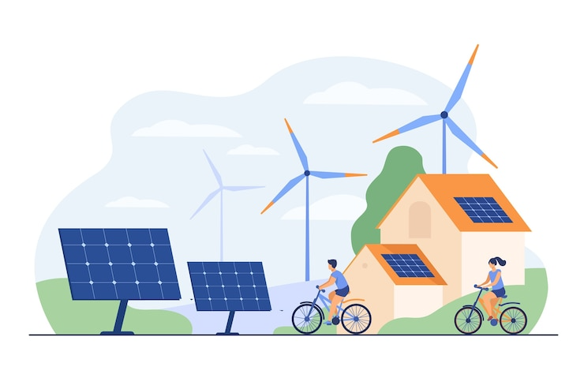
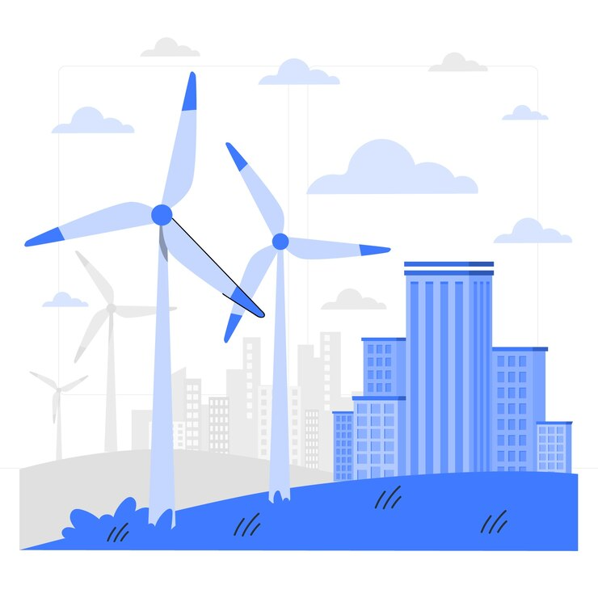
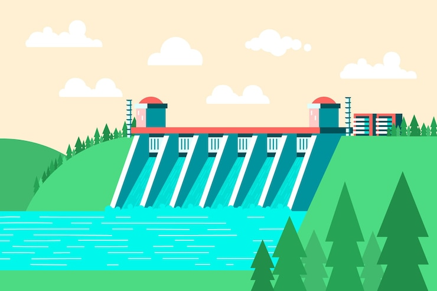
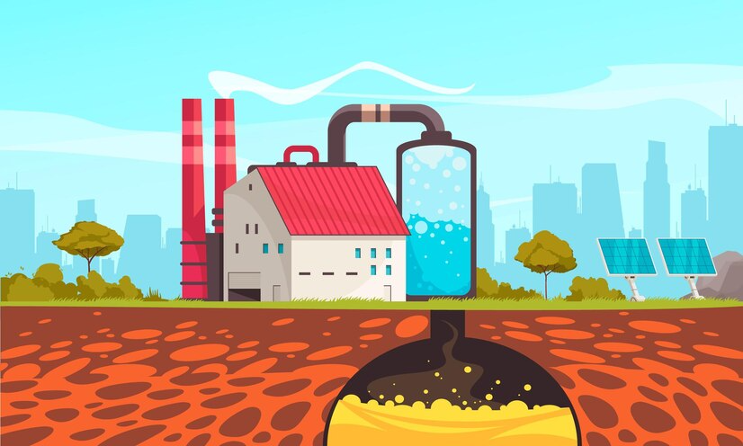
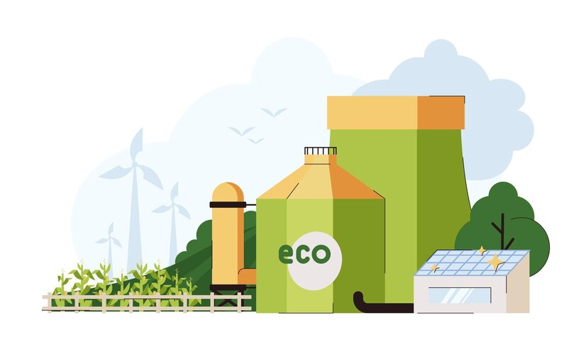

As fontes de energia limpa constituem matérias-primas que não emitem poluentes na atmosfera e causam um
impacto ambiental mínimo, sendo, portanto, favoráveis à preservação da natureza.
Entre as diversas formas de energia que atendem a esses requisitos, destacam-se a energia solar,
eólica, maremotriz, geotérmica, hidráulica e a biomassa. Embora todas causem impactos ambientais, mesmo que
mínimos, não contribuem para a poluição em nível global, tornando-as escolhas sustentáveis.
A energia solar é amplamente reconhecida como uma das principais fontes de energia limpa. Através da
captação dos raios solares por painéis fotovoltaicos, o planeta consegue aproveitar diariamente uma
quantidade considerável de energia.
Esta forma de energia, convertida pelo inversor solar, é uma opção viável, operando diariamente, mesmo
com uma capacidade reduzida em dias chuvosos.

A energia eólica utiliza a força do vento para gerar eletricidade por meio de aerogeradores. Esta opção é eficiente e não poluente, sendo particularmente adequada para locais com ventos favoráveis e inacessíveis pela rede elétrica convencional.

A energia hidroelétrica é uma fonte significativa e renovável de eletricidade que utiliza o movimento da água para gerar energia mecânica, convertida posteriormente em eletricidade por meio de turbinas e geradores. No Brasil, representa uma parcela expressiva da matriz energética, contribuindo com 12,4% do total, conforme dados da Empresa de Pesquisa Energética (EPE).
A energia maremotriz é produzida a partir das marés ou correntes oceânicas, que são geradas de maneira sustentável, necessitando apenas de uma central próxima aos oceanos. Ela é utilizada principalmente para o abastecimento de energia em cidades próximas ao litoral, porém não possibilita uma produção constante, já que o ciclo das marés é irregular.

A energia geotérmica, originária do calor interno da Terra, utiliza o magma situado a menos de 64 km da superfície terrestre. Esse calor faz a água subterrânea evaporar, gerando vapor conduzido por tubulações até as lâminas de uma turbina, onde é convertido em energia mecânica e, posteriormente, em eletricidade por um gerador.
Operando pela passagem de um fluido na zona quente, a energia geotérmica aquece esse fluido, transformando-o em vapor para, então, acionar a turbina e gerar eletricidade. Amplamente utilizada em diversas aplicações cotidianas, como ar-condicionado, aquecimento, e geração de eletricidade, sua produção em larga escala ainda é limitada no Brasil.

A geração de energia limpa por biomassa ocorre pela queima de matérias orgânicas como bagaço da cana-de-açúcar, madeira e óleos vegetais. A produção de biogás a partir do lixo orgânico e biocombustíveis, como etanol e biodiesel, são práticas comuns. Apesar das vantagens, como ser uma alternativa aos combustíveis fósseis, a biomassa interfere no consumo de água e no uso de áreas para cultivo de alimentos. No Brasil, representa 8,9% da matriz energética.
